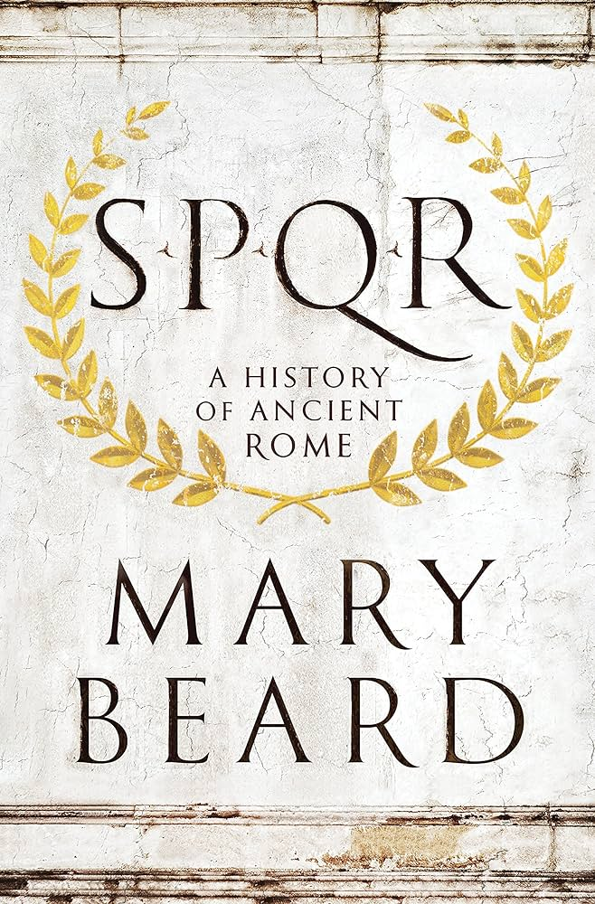
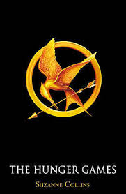

I went to Italy on a faimly trip in early September. We went to Florence, Rome, and Amalfi coast. The food was some of the best food I have ever had. I would say my favorite dish I ate was cacio e pepe
My favorite food is burrito bowls!!! I love to have them extra spicy with a good amount of corn in them. My favorite burrito bowl is from a place called California Burriot but my favorite resturant is still Chipotle
| Name | Cover | Author | Summary |
|---|---|---|---|
| Dune | |
Frank Herbert | a science fiction epic set in a feudal galactic empire where the noble House Atreides is tasked with governing the desert planet Arrakis, the sole source of the vital "spice". |
| The Great Gatsby | |
F. Scott Fitzgerald | Nick Carraway, who moves to Long Island in 1922 and becomes fascinated by his mysterious, wealthy neighbor, Jay Gatsby. |
| SPQR |  | Mary Beard | Provides a comprehensive history of ancient Rome from its legendary origins to the Edict of Caracalla in 212 AD, which granted citizenship to all free people in the empire |
| The Hunger Games |  | Suzanne Collins | Katniss Everdeen of District 12 volunteers to take her younger sister's place in the Hunger Games, a televised death match between two teenagers from each of Panem's twelve districts to punish them for a past rebellion. |